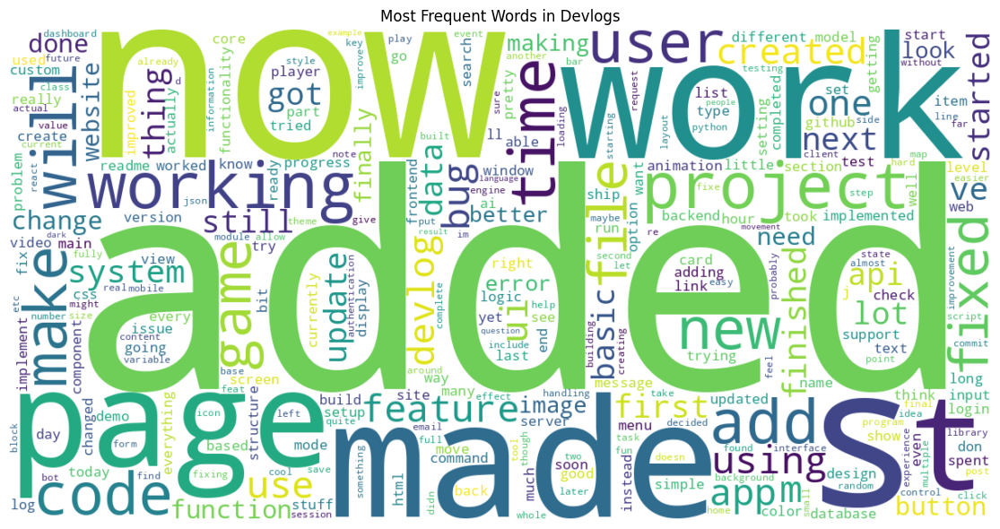

Look at the spaghetti code
import sys
import subprocess
subprocess.check_call([
sys.executable, "-m", "pip", "install", "--upgrade",
"pandas",
"plotly",
"wordcloud",
"matplotlib",
"numpy",
"kaleido",
"pyarrow"
])This notebook runs a bunch of data analysis on the devlogs and saves the analysis to data/processed/devlogs
import pandas as pd
import plotly.express as px
import plotly.graph_objects as go
from plotly.subplots import make_subplots
from wordcloud import WordCloud
import matplotlib.pyplot as plt
import re
import numpy as np
import matplotlib.pyplot as plt
from pathlib import Path
import json
import plotly.io as pio
df = pd.read_parquet('../data/devlogs.parquet')
index = {
"numerical":{},
"top":{},
"graphs":{},
}EXPORT_DIR = Path('../data/processed/devlogs').resolve()
DEFAULT_WIDTH = 1100
DEFAULT_HEIGHT = 420
som_wide = go.layout.Template(layout=dict(
width=DEFAULT_WIDTH,
margin=dict(l=60, r=30, t=60, b=50),
))
pio.templates['som_wide'] = som_wide
pio.templates.default = 'plotly_white+som_wide'
try:
pio.renderers.default = 'vscode'
except Exception:
pass
def register_graph(key: str,name:str, description: str, image_file: str):
index['graphs'][key] = {
'name': name,
'description': description,
'image_file': Path(image_file).name
}
def save_plotly(fig, name: str, description: str, scale: int = 2, width=None, height=None, friendly_name: str = ""):
filename = f"{name}.png"
out_path = EXPORT_DIR / filename
try:
exp_width = width if width is not None else (fig.layout.width or DEFAULT_WIDTH)
exp_height = height if height is not None else (fig.layout.height or DEFAULT_HEIGHT)
fig.write_image(str(out_path), scale=scale, width=exp_width,
height=exp_height)
register_graph(name,friendly_name, description, filename)
except Exception as e:
print(f'Failed to save Plotly figure {name}: {e}')
def save_matplotlib_current(name: str, description: str, dpi: int = 150, friendly_name: str = ""):
filename = f"{name}.png"
out_path = EXPORT_DIR / filename
try:
plt.gcf().savefig(out_path, bbox_inches='tight', dpi=dpi, facecolor='white')
register_graph(name, friendly_name, description, filename)
except Exception as e:
print(f'Failed to save Matplotlib figure {name}: {e}')
def save_to_index(key: str,name:str,description:str, data, type="numerical"):
if isinstance(data, pd.DataFrame):
records = data.to_dict(orient='records')
indexed = {i: rec for i, rec in enumerate(records)}
index[type][key] = {
'name': name,
'description': description,
'data': indexed,
}
else:
index[type][key] = {
'name': name,
'description': description,
'data': data
}Shows some numerical data
Compute and display the average of time_minutes.
Average time per devlog: 178.56 minutesCompute and display the average of devlog_idx_in_project.
avg_devlogs = pd.to_numeric(
df['devlog_idx_in_project'], errors='coerce').mean()
print(f"Average devlogs per project: {avg_devlogs:.2f}")
save_to_index('avg_devlogs', name='Average devlogs per project', description='The average number of devlogs per project.', data=float(avg_devlogs), type='numerical')Average devlogs per project: 6.85Compute and display the average of engagement.
avg_engagement = pd.to_numeric(
df['engagement'], errors='coerce').mean()
print(f"Average engagement per devlog: {avg_engagement:.2f}")
save_to_index('avg_engagement', name='Average engagement per devlog', description='The average engagement per devlog.', data=float(avg_engagement), type='numerical')Average engagement per devlog: 0.31Shows the top stuff
Show the top 3 devlog sorted by time
_df = df.copy()
_df['time_minutes_num'] = pd.to_numeric(_df['time_minutes'], errors='coerce')
_title = _df['project_title'].astype('object').fillna('(untitled)').astype(str)
_df['devlog_label'] = _title.str.slice(0, 28) + ' | #' + _df['devlog_id'].astype(str)
top3 = (_df[['devlog_id', 'project_id', 'devlog_label', 'time_minutes_num']]
.dropna()
.nlargest(3, 'time_minutes_num')
.copy())
top3['time_minutes_num'] = top3['time_minutes_num'].round(2)
top3['project_link'] = top3['project_id'].apply(
lambda x: f"https://summer.hackclub.com/projects/{x}")
top3.reset_index(drop=True, inplace=True)
print("Top 3 devlogs by time (minutes):")
save_to_index('top_devlogs_time', name='Top 3 devlogs by time',
description='The top 3 devlogs by time spent (in minutes).', data=top3, type='top')
top3Top 3 devlogs by time (minutes):| devlog_id | project_id | devlog_label | time_minutes_num | project_link | |
|---|---|---|---|---|---|
| 0 | 36978 | 11469 | e-commerce -websitte | #36978 | 7210.70 | https://summer.hackclub.com/projects/11469 |
| 1 | 31494 | 4604 | Huayushan.fun | #31494 | 7118.57 | https://summer.hackclub.com/projects/4604 |
| 2 | 23803 | 8234 | (Project-2) Mind Garden. | #23803 | 6516.87 | https://summer.hackclub.com/projects/8234 |
Show the top 3 text_length sorted by time
_df = df.copy()
_df['text_length_num'] = pd.to_numeric(_df.get('text_length'), errors='coerce')
_title = _df['project_title'].astype('object').fillna('(untitled)').astype(str)
_df['devlog_label'] = _title.str.slice(
0, 28) + ' | #' + _df['devlog_id'].astype(str)
top3 = (_df[['devlog_id', 'project_id','devlog_label', 'text_length_num']]
.dropna()
.nlargest(3, 'text_length_num')
.copy())
top3['text_length_num'] = top3['text_length_num'].astype(int)
top3['project_link'] = top3['project_id'].apply(
lambda x: f"https://summer.hackclub.com/projects/{x}")
top3.reset_index(drop=True, inplace=True)
print("Top 3 devlogs by text length (characters):")
save_to_index('top_devlogs_text', name='Top 3 devlogs by text length',
description='The top 3 devlogs by text length (in characters).', data=top3, type='top')
top3Top 3 devlogs by text length (characters):| devlog_id | project_id | devlog_label | text_length_num | project_link | |
|---|---|---|---|---|---|
| 0 | 22655 | 7916 | Kale | #22655 | 11982 | https://summer.hackclub.com/projects/7916 |
| 1 | 26706 | 6251 | Cosmic Ray Detector Simulati | #26706 | 10738 | https://summer.hackclub.com/projects/6251 |
| 2 | 11142 | 402 | Unnamed Python Kahoot Genera | #11142 | 9799 | https://summer.hackclub.com/projects/402 |
Show the top 3 text_length sorted by time
_df = df.copy()
_df['engagement_num'] = pd.to_numeric(_df.get('engagement'), errors='coerce')
_title = _df['project_title'].astype('object').fillna('(untitled)').astype(str)
_df['devlog_label'] = _title.str.slice(
0, 28) + ' | #' + _df['devlog_id'].astype(str)
top3 = (_df[['devlog_id', 'project_id', 'devlog_label', 'engagement_num']]
.dropna()
.nlargest(3, 'engagement_num')
.copy())
top3['engagement_num'] = top3['engagement_num'].astype(int)
top3['project_link'] = top3['project_id'].apply(
lambda x: f"https://summer.hackclub.com/projects/{x}")
top3.reset_index(drop=True, inplace=True)
print("Top 3 devlogs by engagement:")
save_to_index('top_devlogs_engagement', name='Top 3 devlogs by engagement',
description='The top 3 devlogs by engagement (number of interactions).', data=top3, type='top')
top3Top 3 devlogs by engagement:| devlog_id | project_id | devlog_label | engagement_num | project_link | |
|---|---|---|---|---|---|
| 0 | 563 | 1014 | MemeOS – A Web-Based “Operat | #563 | 13 | https://summer.hackclub.com/projects/1014 |
| 1 | 35559 | 11089 | Terminal Pong | #35559 | 12 | https://summer.hackclub.com/projects/11089 |
| 2 | 352 | 26 | Lunar | #352 | 10 | https://summer.hackclub.com/projects/26 |
Shows quite a few graphs on the data
This chart shows the number of devlogs created on each date using the created_date column .
date_series = pd.to_datetime(df['created_date'], errors='coerce')
counts = (
pd.DataFrame({'date': date_series.dt.date})
.dropna(subset=['date'])
.groupby('date')
.size()
.reset_index(name='devlog_count')
.sort_values('date')
)
counts['date'] = pd.to_datetime(counts['date'])
counts['rolling_7d'] = counts['devlog_count'].rolling(7, min_periods=1).mean()
fig = px.bar(
counts, x='date', y='devlog_count',
title='Devlogs per Day',
labels={'date': 'Date', 'devlog_count': 'Devlogs'},
color_discrete_sequence=['#636EFA']
)
fig.add_scatter(
x=counts['date'], y=counts['rolling_7d'],
name='7-day average', mode='lines',
line=dict(color='#EF553B', width=2)
)
fig.update_traces(hovertemplate='Date=%{x|%Y-%m-%d}<br>Devlogs=%{y}')
fig.update_layout(
hovermode='x unified', bargap=0.15,
height=max(DEFAULT_HEIGHT, 420),
xaxis=dict(title='Date', tickformat='%b %Y',
showgrid=False, rangeslider=dict(visible=True)),
yaxis=dict(title='Devlogs', showgrid=True, gridcolor='rgba(0,0,0,0.08)')
)
fig.show()
save_plotly(fig, name='devlogs_per_day', description='Number of devlogs per day with 7-day rolling mean', friendly_name='Devlogs per Day')Unable to display output for mime type(s): application/vnd.plotly.v1+jsonTwo horizontal bar charts: total time per project (top 15) and individual devlogs with the highest time (top 15).
TOP_N = 12
_df = df.copy()
_df['time_minutes_num'] = pd.to_numeric(_df['time_minutes'], errors='coerce')
_df = _df.dropna(subset=['time_minutes_num'])
proj_agg = (
_df.groupby(['project_id', 'project_title'], dropna=False,
observed=False)['time_minutes_num']
.sum()
.reset_index()
.sort_values('time_minutes_num', ascending=False)
.head(TOP_N)
)
proj_title = proj_agg['project_title'].astype(
'object').fillna('(untitled)').astype(str).str.slice(0, 38)
proj_agg['project_label'] = proj_title + \
' [' + proj_agg['project_id'].astype(str) + ']'
_dev_title = _df['project_title'].astype(
'object').fillna('(untitled)').astype(str)
_df['devlog_label'] = (_dev_title.str.slice(
0, 28) + ' | #' + _df['devlog_id'].astype(str))
devlog_top = (
_df[['devlog_id', 'devlog_label', 'time_minutes_num']]
.sort_values('time_minutes_num', ascending=False)
.head(TOP_N)
)
height = max(len(proj_agg), len(devlog_top)) * 44 + 240
fig = make_subplots(
rows=1, cols=2, column_widths=[0.5, 0.5],
subplot_titles=(
'Top Projects by Total Time (minutes)',
'Top Devlogs by Time (minutes)'
)
)
fig.add_trace(
go.Bar(
x=proj_agg['time_minutes_num'][::-1],
y=proj_agg['project_label'][::-1],
orientation='h',
marker_color='#636EFA',
hovertemplate='%{y}<br>Total=%{x:.2f} min'
), row=1, col=1
)
fig.add_trace(
go.Bar(
x=devlog_top['time_minutes_num'][::-1],
y=devlog_top['devlog_label'][::-1],
orientation='h',
marker_color='#EF553B',
hovertemplate='%{y}<br>Time=%{x:.2f} min'
), row=1, col=2
)
fig.update_layout(
height=max(DEFAULT_HEIGHT + (len(proj_agg)*18), height),
margin=dict(l=220, r=30, t=80, b=40),
showlegend=False,
bargap=0.25
)
fig.update_xaxes(title_text='Minutes', row=1, col=1)
fig.update_xaxes(title_text='Minutes', row=1, col=2)
fig.update_yaxes(title_text='Project', row=1, col=1,
automargin=True, tickfont=dict(size=11))
fig.update_yaxes(title_text='Devlog', row=1, col=2,
automargin=True, tickfont=dict(size=11))
fig.show()
save_plotly(fig, name='top_projects_and_devlogs_by_time', description='Two horizontal bar charts: total time per project (top 12) and individual devlogs with the highest time', friendly_name='Top projects and devlogs by time')Unable to display output for mime type(s): application/vnd.plotly.v1+jsonHeatmap of devlog counts by day of week and hour (UTC).
def to_day_name(s: pd.Series) -> pd.Series:
if pd.api.types.is_numeric_dtype(s):
mapping = {0: 'Monday', 1: 'Tuesday', 2: 'Wednesday',
3: 'Thursday', 4: 'Friday', 5: 'Saturday', 6: 'Sunday'}
return s.map(mapping)
return s.astype(str)
if {'created_dow', 'created_hour_utc'}.issubset(df.columns):
dow = to_day_name(df['created_dow'])
hour = pd.to_numeric(df['created_hour_utc'], errors='coerce')
else:
ts = pd.to_datetime(df['created_at'], errors='coerce', utc=True)
dow = ts.dt.day_name()
hour = ts.dt.hour
_counts = (
pd.DataFrame({'dow': dow, 'hour': hour})
.dropna()
.assign(hour=lambda d: pd.to_numeric(d['hour'], errors='coerce').astype('Int64'))
.dropna()
.assign(hour=lambda d: d['hour'].astype(int).clip(0, 23))
.groupby(['dow', 'hour'], observed=False)
.size()
.reset_index(name='count')
)
dow_order = ['Monday', 'Tuesday', 'Wednesday',
'Thursday', 'Friday', 'Saturday', 'Sunday']
hour_order = list(range(24))
pivot = (
_counts.pivot_table(index='dow', columns='hour',
values='count', fill_value=0)
.reindex(index=dow_order, columns=hour_order, fill_value=0)
)
fig = px.imshow(
pivot,
labels=dict(x='Hour (UTC)', y='Day of Week', color='Devlogs'),
color_continuous_scale='Blues',
aspect='auto',
title='Devlogs by Day of Week and Hour (UTC)'
)
fig.update_layout(height=max(DEFAULT_HEIGHT + 40, 460),
margin=dict(l=60, r=30, t=60, b=40))
fig.show()
save_plotly(fig, name='devlogs_heatmap_dow_hour', description='Heatmap of devlog counts by day of week and hour (UTC)', friendly_name='Devlogs heatmap (DOW vs Hour)')Unable to display output for mime type(s): application/vnd.plotly.v1+jsonCumulative total of devlogs across dates.
_ds = pd.to_datetime(df['created_date'], errors='coerce')
series = (
pd.DataFrame({'date': _ds.dt.date})
.dropna()
.groupby('date')
.size()
.reset_index(name='count')
.sort_values('date')
)
series['date'] = pd.to_datetime(series['date'])
series['cumulative'] = series['count'].cumsum()
fig = px.area(series, x='date', y='cumulative',
title='Cumulative Devlogs',
labels={'date': 'Date', 'cumulative': 'Total Devlogs'},
color_discrete_sequence=['#19A974'])
fig.update_layout(height=max(DEFAULT_HEIGHT, 420))
fig.show()
save_plotly(fig, name='cumulative_devlogs', description='Cumulative total of devlogs over time', friendly_name='Cumulative Devlogs')Unable to display output for mime type(s): application/vnd.plotly.v1+jsonWhich devlogs have high time and high engagement?
_df = df.copy()
_df['time_minutes_num'] = pd.to_numeric(_df['time_minutes'], errors='coerce')
if 'engagement' in _df.columns:
_df['engagement_num'] = pd.to_numeric(_df['engagement'], errors='coerce')
elif 'likes_count' in _df.columns:
_df['engagement_num'] = pd.to_numeric(_df['likes_count'], errors='coerce')
else:
_df['engagement_num'] = pd.NA
if 'likes_count' in _df.columns:
_df['likes_size'] = pd.to_numeric(
_df['likes_count'], errors='coerce').fillna(0).clip(lower=0)
else:
_df['likes_size'] = pd.Series([None] * len(_df), index=_df.index)
plot_df = _df.dropna(subset=['time_minutes_num', 'engagement_num']).copy()
kwargs = {}
if plot_df['likes_size'].notna().any():
kwargs['size'] = 'likes_size'
kwargs['size_max'] = 24
fig = px.scatter(
plot_df,
x='time_minutes_num', y='engagement_num',
hover_data={'project_title': True, 'devlog_id': True,
'time_minutes_num': ':.1f', 'engagement_num': ':.1f'},
labels={'time_minutes_num': 'Time (minutes)', 'engagement_num': 'Engagement',
'has_attachment_bool': 'Has attachment'},
title='Engagement vs Time Spent',
**kwargs
)
fig.update_layout(height=max(DEFAULT_HEIGHT, 450),
margin=dict(l=60, r=30, t=60, b=50))
fig.show()
save_plotly(fig, name='engagement_vs_time', description='Scatter plot of engagement versus time spent per devlog', friendly_name='Engagement vs Time')Unable to display output for mime type(s): application/vnd.plotly.v1+jsonHow is the time spread out?
s = pd.to_numeric(df['time_minutes'], errors='coerce')
fig = px.histogram(
s.dropna(), nbins=40,
title='Distribution of Time per Devlog',
labels={'value': 'Minutes', 'count': 'Devlogs'},
color_discrete_sequence=['#636EFA']
)
fig.update_traces(marker_line_color='white', marker_line_width=0.5)
fig.update_layout(bargap=0.05,
height=max(DEFAULT_HEIGHT - 20, 400),
xaxis_title='Minutes', yaxis_title='Devlogs')
fig.show()
save_plotly(fig, name='time_distribution', description='Histogram of time per devlog', friendly_name='Time Distribution')Unable to display output for mime type(s): application/vnd.plotly.v1+jsonWhich category has the highest time?
_df = df.copy()
_df['time_minutes_num'] = pd.to_numeric(_df['time_minutes'], errors='coerce')
cat = (
_df.dropna(subset=['category', 'time_minutes_num'])
.groupby('category', observed=False)['time_minutes_num']
.mean()
.reset_index(name='avg_minutes')
.sort_values('avg_minutes', ascending=False)
)
fig = px.bar(
cat, x='category', y='avg_minutes',
title='Average Time by Category',
labels={'category': 'Category', 'avg_minutes': 'Avg Minutes'},
color_continuous_scale='Viridis'
)
fig.update_layout(height=max(DEFAULT_HEIGHT, 420), xaxis_tickangle=-30)
fig.show()
save_plotly(fig, name='avg_time_by_category', description='Average time spent per devlog by category', friendly_name='Average Time by Category')Unable to display output for mime type(s): application/vnd.plotly.v1+jsonTwo separate donut charts showing the share by category and by attachment_ext (top groups, others combined). Each chart has its own legend.
K = 10
_df = df.copy()
def topk_counts(series: pd.Series, k: int):
vc = (series.astype(str)
.str.strip()
.replace({'': pd.NA, 'None': pd.NA, 'nan': pd.NA})
.dropna()
.value_counts())
if len(vc) <= k:
labels = vc.index.tolist()
values = vc.values.tolist()
else:
top = vc.head(k)
others = vc.iloc[k:].sum()
labels = top.index.tolist() + ['Other']
values = top.values.tolist() + [others]
return labels, values
cat_labels, cat_values = topk_counts(
_df.get('category', pd.Series(dtype=object)), K)
att_labels, att_values = topk_counts(
_df.get('attachment_ext', pd.Series(dtype=object)), K)
fig_cat = go.Figure(go.Pie(
labels=cat_labels, values=cat_values, hole=0.5, name='Category',
textinfo='label+percent', hovertemplate='%{label}: %{value} devlogs (%{percent})'
))
fig_cat.update_layout(
title_text='Category Distribution', height=max(DEFAULT_HEIGHT, 420),
showlegend=False
)
fig_cat.show()
save_plotly(fig_cat, name='category_distribution', description='Donut chart showing share of devlogs by category (top-k + Other)', friendly_name='Category Distribution')
fig_att = go.Figure(go.Pie(
labels=att_labels, values=att_values, hole=0.5, name='Attachment Ext',
textinfo='none', hovertemplate='%{label}: %{value} devlogs (%{percent})'
))
fig_att.update_layout(
title_text='Attachment Extension Distribution', height=max(DEFAULT_HEIGHT, 420),
legend=dict(orientation='h', yanchor='bottom',
y=1.02, xanchor='right', x=1)
)
fig_att.show()
save_plotly(fig_att, name='attachment_extension_distribution', description='Donut chart showing share by attachment file extension (top-k + Other)', friendly_name='Attachment Extension Distribution')Unable to display output for mime type(s): application/vnd.plotly.v1+jsonUnable to display output for mime type(s): application/vnd.plotly.v1+jsonSome cool text analysis coz i am bored
text_cols = [c for c in ['text', 'content',
'body', 'message'] if c in df.columns]
texts = (
df[text_cols].astype(str).agg(' '.join, axis=1)
if text_cols else pd.Series([], dtype=str)
)
# Basic cleaning
corpus = ' '.join(texts.dropna().tolist())
corpus = re.sub(r"https?://\S+", " ", corpus)
corpus = re.sub(r"[^A-Za-z0-9_+#-]+", " ", corpus)
corpus = re.sub(r"\s+", " ", corpus).strip().lower()
if corpus:
wc = WordCloud(
width=1200, height=600, background_color='white',
collocations=False, max_words=300
).generate(corpus)
# Create figure handle, save before showing to prevent blank exports in some backends
fig = plt.figure(figsize=(12, 6))
plt.imshow(wc, interpolation='bilinear')
plt.axis('off')
plt.title('Most Frequent Words in Devlogs')
plt.tight_layout()
save_matplotlib_current(name='devlog_word_cloud', description='Word cloud of most frequent devlog words', friendly_name='Devlog Word Cloud')
plt.show()
else:
print('No devlog text columns found or text is empty. Expected one of:', text_cols)
_df = df.copy()
if 'text_length' not in _df.columns:
candidates = [c for c in ['text', 'content',
'body', 'message'] if c in _df.columns]
if candidates:
txt = _df[candidates].astype(str).agg(' '.join, axis=1)
_df['text_length'] = txt.fillna('').str.len()
else:
_df['text_length'] = pd.NA
_df['time_minutes_num'] = pd.to_numeric(
_df.get('time_minutes'), errors='coerce')
if 'engagement' in _df.columns:
_df['engagement_num'] = pd.to_numeric(_df['engagement'], errors='coerce')
elif 'likes_count' in _df.columns:
_df['engagement_num'] = pd.to_numeric(_df['likes_count'], errors='coerce')
# 1) Histogram of text length
s = pd.to_numeric(_df['text_length'], errors='coerce')
fig = px.histogram(
s.dropna(), nbins=50, title='Distribution of Devlog Text Length',
labels={'value': 'Characters', 'count': 'Devlogs'}, color_discrete_sequence=['#636EFA']
)
fig.update_layout(showlegend=False)
fig.update_traces(marker_line_color='white', marker_line_width=0.5)
fig.update_layout(height=max(DEFAULT_HEIGHT - 20, 400))
fig.show()
save_plotly(fig, name='text_length_distribution', description='Histogram of devlog text length', friendly_name='Text Length Distribution')
# 2) Scatter: text length vs time
plot_df = _df.dropna(subset=['text_length', 'time_minutes_num']).copy()
fig = px.scatter(plot_df, x='text_length', y='time_minutes_num', trendline='ols',
title='Text Length vs Time Spent',
labels={'text_length': 'Text length (chars)', 'time_minutes_num': 'Time (minutes)'}).update_layout(height=max(DEFAULT_HEIGHT, 420))
fig.show()
save_plotly(fig, name='text_length_vs_time', description='Scatter plot of text length vs time spent', friendly_name='Text Length vs Time')
# 3) Scatter: text length vs engagement
if 'engagement_num' in _df.columns:
plot_df = _df.dropna(subset=['text_length', 'engagement_num']).copy()
fig = px.scatter(plot_df, x='text_length', y='engagement_num', trendline='ols',
title='Text Length vs Engagement',
labels={'text_length': 'Text length (chars)', 'engagement_num': 'Engagement'}).update_layout(height=max(DEFAULT_HEIGHT, 420))
fig.show()
save_plotly(fig, name='text_length_vs_engagement', description='Scatter plot of text length vs engagement', friendly_name='Text Length vs Engagement')Unable to display output for mime type(s): application/vnd.plotly.v1+jsonUnable to display output for mime type(s): application/vnd.plotly.v1+jsonUnable to display output for mime type(s): application/vnd.plotly.v1+jsonAverage engagement by category with 95% CI error bars (top categories for readability).
_df = df.copy()
if 'engagement' in _df.columns:
_df['engagement_num'] = pd.to_numeric(_df['engagement'], errors='coerce')
elif 'likes_count' in _df.columns:
_df['engagement_num'] = pd.to_numeric(_df['likes_count'], errors='coerce')
else:
_df['engagement_num'] = pd.NA
agg = (
_df.dropna(subset=['category', 'engagement_num'])
.groupby('category', observed=False)['engagement_num']
.agg(['mean', 'count', 'std'])
.reset_index()
)
agg['se'] = (agg['std'].fillna(0) / np.sqrt(agg['count'].clip(lower=1)))
agg['ci95'] = 1.96 * agg['se']
agg = agg.sort_values('mean', ascending=False)
TOP = 15
plot = agg.head(TOP)
fig = go.Figure()
fig.add_trace(go.Bar(
x=plot['category'], y=plot['mean'],
error_y=dict(type='data', array=plot['ci95'], visible=True),
marker_color='#1F77B4', name='Avg engagement'
))
fig.update_layout(
title=f'Average Engagement by Category (Top {TOP})', height=max(DEFAULT_HEIGHT, 450),
xaxis_title='Category', yaxis_title='Avg engagement', xaxis_tickangle=-30,
margin=dict(l=60, r=30, t=60, b=60)
)
fig.show()
save_plotly(fig, name='avg_engagement_by_category', description='Average engagement by category with 95% CI (top categories)', friendly_name='Avg Engagement by Category')Unable to display output for mime type(s): application/vnd.plotly.v1+json